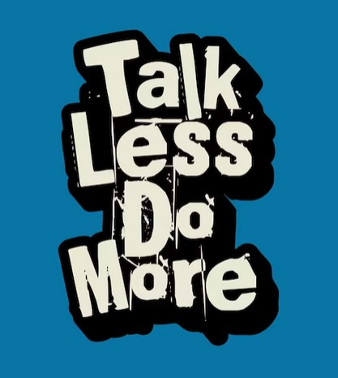

Minimalism has many benefits but does minimalism make you happier? Is there a relationship between simplicity and happiness? In this article I’m sharing my own personal perspective on whether minimalism can make us happier and, in some cases, why it can’t.
I wanted to write an article about what a difference a minimalist life has made to me. If you don’t like the ‘minimalist’ label, then I encourage you to still keep reading. You can switch the term ‘minimalist’ or ‘minimalism’ for a decluttered and simplified life, if that feels more comfortable.
When I was recently researching minimalism on the internet, one of the questions that people searched for was this…
“Does minimalism make you happier?”
I thought I’d share my personal perspective on this question to see if it might help you decide for yourself whether minimalism could make you happier too.
The minimalist lifestyle is a conscious and aware one, of the stuff that clutters and distracts you from living a meaningful life. When so much of modern-day life is filled with things to do, buy, achieve, plan, remember, strive for and tick off on those lists, a minimalist life encourages us to question the norm.
Many people don’t ask these questions.
Life stripped of this stuff and padding might feel empty on the surface…
Until you realise what minimalism is really all about and why it matters.
Minimalism matters because it stops us focusing on material possessions and instead invites us to focus inwards – on the people, memories, experiences, feelings, mindsets, skills, learning, opportunities and passions that add true meaning to our lives.
Minimalism in real life doesn’t mean going without, never buying anything new, having no furniture, or being bland, boring, dull or any of the adjectives you might have heard.
What minimalism (or simplifying) does mean is that you have time, space, freedom, energy, flexibility and vigour for filling your life with things that have meaning. Things that make you feel happy and grateful to live YOUR life, not somebody else’s. And, definitely, not a life where you’re hiding behind, or buried under your clutter.
These are the things that you often don’t find when you look at what’s stuffed in your cupboards and filling up your To Do list.
Minimalism makes space for the best of you and your life.
According to verywellmind.com, happiness is an emotional state characterised by feelings of joy, satisfaction, contentment, and fulfilment.
They identify some of the key signs of happiness as:
So, does make minimalism make you happier? Well, if these are some of the ways that we can define happiness then from my own personal experience, I’d say yes!
Here are some of the benefits I’ve noticed since becoming minimalist (or since I began decluttering and simplifying my life).
I spend less time cleaning and managing the stuff in my home, because I have less stuff and clutter to sort, clear and clean. This means I have more time to enjoy my home rather than worrying about the state of it.
Research shows the correlation between clutter and stress. Less stuff to worry about and more time on my hands means less stress. I’m not struggling to keep up with my home and my life. My outer environment is calmer which means my inner environment (my body and mind) is calmer too.
I go shopping and buy things but I spend mindfully and wisely. I avoid getting into debt, spending more than I have and I don’t have multiple credit or store cards to tempt me to overspend.
Our schedules can be cluttered like our homes, but removing the things that don’t feel right has created more time and more wiggle room. Streamlining my diary, blocking out free time, taking care over choosing activities and accepting invitations have all helped me find time for what matters instead of what just wears me out.
Look at your life from a different perspective. Instead of wishing you had more or different, minimalism encourages you to re-assess what you have already. It just depends on what it is that you’re needing. Is it more shoes, more gadgets, or is it more time, peace or love? Gratitude is a powerful mindset that changes how you perceive ‘enough’ in your life.
When my time is less over-booked and I have less pulls on my time and brain, then I can actually listen to my body and what it needs. I’m more aware of what I’m feeling and why, and I have space and flexibility to make any changes I need.
I think this benefit of minimalism is also vital if you have extra challenges in life. This could be older age, ill health, mid-life menopause, financial worries, mental health struggles or the difficulties of neurodivergency such as ADHD. Minimalism gives space and freedom to find what works for you in life, without judgement or pressure.
Saying no is like a muscle. The more you use it, the stronger it becomes. Far from being selfish, or standoffish, or ungrateful, no is a powerful word to help you create and nurture strong boundaries – for your time, home, family, mental health and more.
If you’re deciding what to keep and what to get rid of, you need to start by understanding what you want from life. How else do you know what deserves a space and place in your home and life? So often, we power through life not really checking to see if we’re going in the direction we hoped. Minimalism forces you to check your navigation!
And, with all the above, comes a greater understanding of what matters. To you, to those you love. Avoid a life of regrets, of what if’s and if only’s. Choose life over stuff, what matters to you instead of what matters to everyone else.
Although the common perception is that minimalism is about getting rid of stuff, I think many of the benefits I’ve just mentioned aren’t really to do with stuff at all.
They’re about space, time, freedom, flexibility, personal growth, doing more of what we want and less of what we don’t and finding ways to make everyday life that little bit easier with a lot more direction and awareness.
Getting rid of stuff is an element of minimalism but it’s by no means the only part. Minimalism is not about your stuff, it’s about finding yourself in amongst that stuff.
If you asked me the question of whether minimalism makes me happier, it’s a resounding yes. I have less stress, more ease, peace and joy in my life. I can be present for the things that are most important to me.
Perhaps it might help to turn the question around slightly. What would make you happy? Is it the car, the shoes, the gadgets or is it more freedom, more time, less hassle, more experiences, more memories? Less chasing, less comparing, less trying to do all the things, less burning the candle at both ends only to burn yourself out in the process?
A minimalist lifestyle can help you create time for what matters.
If minimalism is about creating space for a meaningful life, then yes. If it’s just because you want to clear a few cupboards and leave it at that, then probably not.
The answer really depends on what you want to achieve at the end of it. Try these gentle reminders about minimalism for a little recap.
If this article has made you curious about the minimalist lifestyle and you’d like to try it for yourself, here are some helpful resources:
Hello! I'm Berni. From struggeling to manage family, work and all the stuff i want to do, i learned to declutter, organise and simolify my life to create time, space and freedom for what matters to me.
Think outside the Box
Talk less - Do more